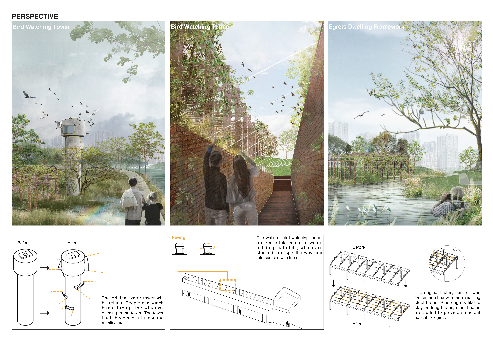
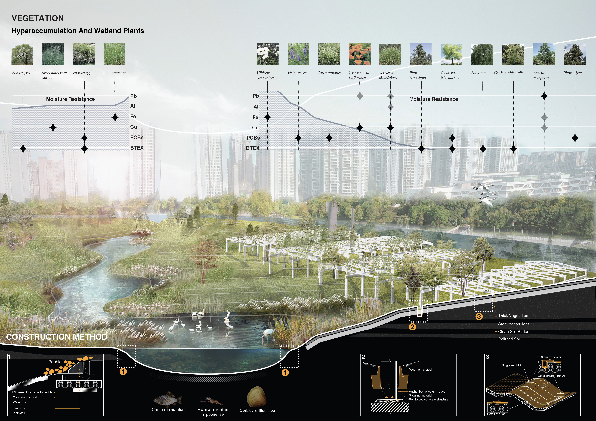
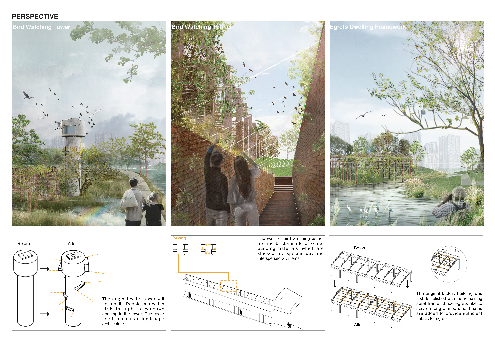
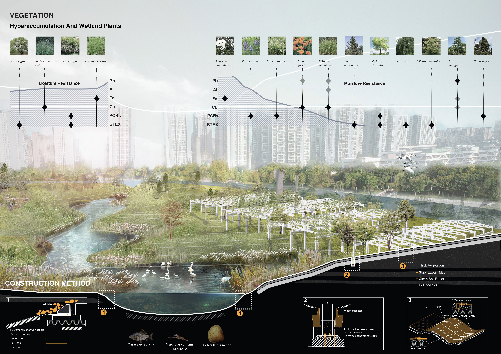
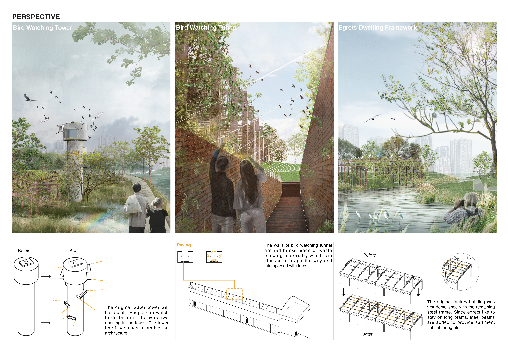
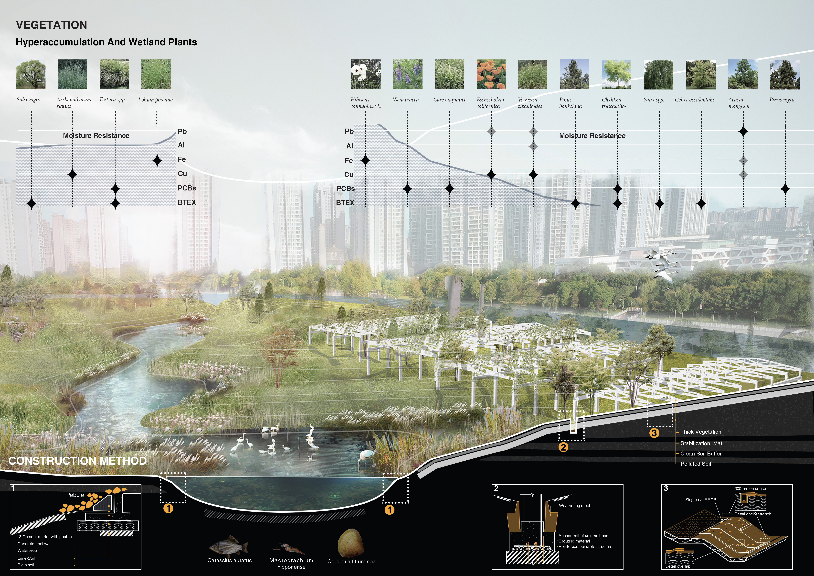

Chengdu Electric Power Fitting Factory used to be situated in the outskirts of the city, yet it is currently enclosed by busy downtown area. Since the factory relocated to the place far away from city centre, the original site has been derelict for 18 years, waiting to be converted.
When I conducted an on-site investigation, I noticed that fIying white egrets were in stark contrast with the construction waste. The egrets survived in this abandoned building. After researching the habitat of the egret, I determined to conserve the post-industrial brownfield.
I aim to restore this area to the dwelling of egrets, while retaining the characteristics of a post-industrial society. Egrets can search for a habitat in a city filled with skyscrapers.

